컴퓨터활용능력-1급 (2007-05-06 기출문제)
1과목: 컴퓨터 일반
1. 운영체제의 종류에서 두 대 이상의 컴퓨터를 함께 묶어서 단일 시스템처럼 사용하는 기술을 무엇이라 하는가?
- 멀티프로그래밍
- 멀티프로세싱
- 병렬 처리
- 클러스터링
(정답률: 37%)

2. 다음 중 모니터에 대한 설명으로 가장 옳지 않은 것은?
- 해상도가 높을수록 모니터에 나타나는 영상은 선명하다.
- 모니터에 나타나는 작은 점으로 영상에 표현하는 최소 단위를 도트(Dot)라고 한다.
- 출력 장치의 하나로 문자나 그림을 화면에 표시해주는 장치이다.
- PDP, LCD, CRT 등 여러 가지 방식이 사용된다.
(정답률: 70%)
3. 다음 중 한글 Windows XP에서 새 하드웨어를 추가하려는 경우 중 잘못된 것은?
- 시스템 관리 프로그램은 반드시 ‘새 하드웨어 추가’에서만 작업해야 한다.
- 플러그 앤 플레이가 지원되지 않는 장치를 추가할 때에는 제어판의 ‘새 하드웨어 추가’를 더블클릭하고, ‘하드웨어 추가 마법사’의 지시를 따른다.
- 플러그 앤 플레이가 지원되는 하드웨어를 컴퓨터에 새로 장착하고 윈도우 XP를 실행하면, 새로 장착한 하드웨어를 자동으로 인식하고 ‘새 하드웨어 검색 마법사’가 실행된다.
- 새 하드웨어 추가에서는 하드웨어를 검색하고 장치 제어기(드라이버)를 설정한다.
(정답률: 70%)
4. 다음 중 인터넷 또는 네트워크와 관련된 서비스의 설명으로 옳지 않은 것은?
- FTP 서비스는 컴퓨터와 컴퓨터 또는 컴퓨터와 인터넷 사이에서 파일을 주고 받을 수 있도록 하는 원격 파일 전송 프로토콜이다.
- SMTP 서비스는 사용자의 컴퓨터에서 작성한 메일을 다른 사람의 계정이 있는 곳으로 전송해 주며, POP3는 메일 서버에 도착한 E-Mail을 사용자 컴퓨터로 가져올 수 있도록 메일 서버에서 제공하는 프로토콜이다.
- HTTP 서비스는 웹 상에서 파일(텍스트, 그래픽/이미지, 사운드, 비디오 그리고 기타 멀티미디어 파일)을 주고받는데 필요한 서비스로, 현재 인터넷을 사용한다는 것을 대부분 HTTP 서비스를 사용함을 의미한다.
- SNMP 서비스는 네트워크 관리 및 네트워크 장치와 그들의 동작을 감시, 통제하는 서비스로 반드시 TCP/IP 네트워크에만 한정되어 사용된다.
(정답률: 72%)
5. 다음 중 한글 Windows XP의 [제어판]-[네트워크 연결]에서 [로컬 영역 연결 상태]의 속성에서 할 수 있는 일이 아닌 것은?
- 인증된 네트워크에 엑세스할 때 필요한 스마트카드나 인증서를 선택할 수 없다.
- 클라이언트, 서비스, 프로토콜 등의 네트워크 구성 요소를 설치 및 제거 할 수 있다.
- 네트워크의 연결 상태를 작업 표시줄의 알림 영역에 표시 여부를 선택할 수 있다.
- 네트워크 연결에 사용된 장치를 확인할 수 있다.
(정답률: 49%)
6. 전원이 공급되지 않아도 내용이 지워지지 않는 비휘발성 메모리 EEPROM의 일종으로 휴대용 컴퓨터나 디지털 카메라 등의 보조기억장치로 이용되는 메모리는?
- 플래시 메모리(Flash Memory)
- 플로피 디스크(Floppy Disk)
- 카세트 테이프(Cassette Tape)
- 광 디스크(Optical Disk)
(정답률: 82%)
7. 다음 중 IPv6(Internet Protocol Version 6)의 특징이 아닌 것은?
- IPv6의 주소 구성은 16비트씩 2부분, 총 32비트로 구성되어 있다.
- IPv4에 비하여 자료 전송 속도가 빨라진다.
- 실시간 흐름 제어로 향상된 멀티미디어 기능을 지원한다.
- 현재 사용되고 있는 IP 주소체계인 IPv4의 주소 부족 문제를 해결하기 위해 개발되었다.
(정답률: 82%)
8. 다음 중 방화벽에 대한 설명으로 적절하지 않은 것은?
- 방화벽 시스템에는 확실히 허가받지 않은 것을 금지하는 애플리케이션 게이트웨이 방식과 확실히 금지되지 않은 것을 허가하는 패킷 필터링 게이트웨이 방식이 있다.
- 방화벽 시스템은 내부와 외부로부터 불법적인 해킹을 완전히 차단할 수 있다.
- 방화벽이 제공하는 기능에는 접근 제어, 인증, 감사 추적, 암호화 등이 있다.
- 프록시 서버는 네트워크 캐시 기능과 방화벽 기능을 동시에 제공해 주는 서버이다.
(정답률: 86%)
9. 다음 중 Windows XP 운영체제의 모든 구성 데이터의 중앙 저장소라고 할 수 있는 레지스트리에 관한 설명으로 가장 옳지 않은 것은?
- 레지스트리 편집기를 사용하여 레지스트리를 잘못 변경하면 시스템을 손상시킬 수 있으므로 중요한 정보를 모두 백업한 후 레지스트리를 변경하는 것이 좋다.
- 레지스트리에는 각 사용자의 프로필과 시스템 하드웨어, 설치된 프로그램 및 속성 설정에 대한 정보가 들어있다.
- 레지스트리를 변경하여 컴퓨터 시스템에 손상이 발생할 경우, 컴퓨터를 성공적으로 시작했을 때 사용한 레지스트리 버전으로 복원할 수 없다.
- 레지스트리 편집기를 사용하면 컴퓨터 실행 방법에 대한 정보가 들어 있는 시스템 레지스트리의 설정을 검색하고 변경할 수 있다.
(정답률: 70%)
10. 다음 중 한글 Windows XP에서 인터넷을 사용하기 위하여 클라이언트가 동적 IP주소를 할당받을 수 있게 해 주는 것은?
- WWW
- HTML
- DHCP
- WINS
(정답률: 56%)
11. 다음 중 일반적으로 URL로 표시된 주소의 프로토콜과 기본 포트 번호가 관련이 없는 것은?
- [http://www.korcham.net] 포트번호 : 80
- [ftp://ftp.korcham.net] 포트번호 : 22
- [telnet://home.chollian.net] 포트번호 : 23
- [gopher://gopher.ssu.org] 포트번호 : 70
(정답률: 44%)
12. 다음 중 RISC 프로세서에 대한 설명으로 옳지 않은 것은?
- 주소 지정 모드와 명령어의 종류가 적다.
- 프로그래밍이 어려운 반면 처리속도가 빠르다.
- CISC 프로세서에 비해 생산 가격이 비싸고 소비 전력이 높다.
- 고성능의 워크스테이션이나 그래픽용 컴퓨터에 많이 사용된다.
(정답률: 55%)
13. 다음 중 유비쿼터스 환경에 대한 설명으로 옳지 않은 것은?
- 컴퓨터는 물론 가전제품 등 다양한 기기가 네트워크에 접속되어야 한다.
- 가급적 이용자의 눈에 보이지 않아야 한다.
- 현실 세계의 기기 또는 사물과는 독립적이어야 한다.
- 언제, 어디서나 사용 가능해야 한다.
(정답률: 59%)
14. LAN의 매체 접근제어 방식 중에서 CSMA/CD는 어떤 구조에서 사용되는 방식인가?
- Star형 구조
- Tree형 구조
- Bus형 구조
- Mesh형 구조
(정답률: 50%)
15. 다음 중 파일 확장자를 종류별로 올바르게 모아놓은 것은?
- 실행 파일 : COM, EXE
- 그림 파일 : BMP, BAK, JPG, GIF
- 음악 파일 : HWP, WAV, MP3, MID
- 압축 파일 : ZIP, ARJ, AVI
(정답률: 53%)
16. 가로 320 픽셀, 세로 240 픽셀 크기의 256 색상으로 표현된 정지 영상을 10:1로 압축하여 JPG 파일로 저장하였을 때 이 파일의 크기는 대략 얼마인가?
- 7.68 KB
- 76.8 KB
- 768 KB
- 0.768 KB
(정답률: 43%)
17. Windows XP의 시작 메뉴에 대한 설명 중 가장 적절하지 않은 것은?
- 시작 메뉴의 단축키는 [Ctrl]+[Esc]이다.
- 시작 메뉴의 프로그램 목록은 고정된 항목 목록과 자주 사용하는 프로그램 목록 두 부분으로 나뉜다.
- 프로그램이 시작 메뉴의 경계선 위에 있는 영역에 고정된 항목 목록으로 표시되기 위해서는 표시할 프로그램을 마우스 오른쪽 단추로 클릭하고, 시작 메뉴에 고정을 클릭한다.
- 자주 사용하는 프로그램 목록에 표시되는 프로그램의 기본 개수는 변경할 수 없다.
(정답률: 73%)
18. 아래 보기 항목을 프로그램의 처리 순서에 맞게 나열한 것은?
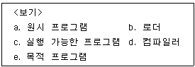
- a-d-e-c-b
- a-d-e-b-c
- b-a-d-e-c
- d-a-e-b-c
(정답률: 38%)
19. 다음은 그림 파일의 포멧(Format)이다. 같은 이미지를 저장할 때 저장 파일의 크기가 가장 큰 것은?
- JPG
- BMP
- GIF
- WMP
(정답률: 47%)
20. 다음 중 무선 인터넷과 관련된 용어로 가장 관계 없는 것은?
- WAP
- WPC
- WML
- WTP
(정답률: 38%)
2과목: 스프레드시트 일반
21. 다음 중 공유 통합 문서에 대한 설명으로 틀린 것은?
- 공유 통합 문서가 저장된 네트워크 위치를 액세스하는 모든 사용자는 공유 통합 문서에 접근할 수 있다.
- 공유 통합 문서는 사용자의 엑셀 버전과는 관계없이 사용할 수 있다.
- 공유 통합 문서를 네트워크 위치에 복사하면 다른 통합 문서나 문서의 연결이 유지된다.
- 공유 통합 문서의 변경 내용에 관한 정보를 나타내는 변경 내용을 설정한다.
(정답률: 61%)
22. 다음은 셀 서식의 표시 형식에 대한 설명이다. 잘못된 것은?
- 0의 값은 회계 표시 형식을 이용하면 -로 표시할 수 있다.
- dddd 표식 형식은 요일을 Saturday와 같은 형태로 표시한다.
- 통화 서식에서는 음수의 표시 형식을 설정할 수 없다.
- yyyy.mmm 표시 형식은 2003.Jul와 같은 형태로 표시한다.
(정답률: 49%)
23. 다음 중 [데이터]-[정렬] 메뉴를 이용한 정렬 대화상자에 대한 설명으로 옳지 않은 것은?(오피스 2003 기준 문제 입니다.)
- 선택한 데이터 범위의 첫 행 : ‘머리글 행 아님’을 선택하면 첫 행은 정렬에서 제외된다.
- 정렬 기준 : 정렬 기준을 설정하며, 최대 3개까지 설정할 수 있다.
- 정렬 방식 : 정렬 방식을 설정한다.(오름차순, 내림차순)
- 옵션 : 옵션 버튼을 클릭하면 ‘정렬 옵션’ 대화상자가 나타낸다.
(정답률: 36%)
24. 다음의 데이터 통합 대화 상자에 대한 설명으로 옳지 않은 것은?
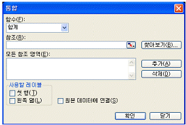
- 함수 : 합계, 평균, 곱, 개수, 수치 개수, 최대값, 최소값, 분산, 표본 분산, 표준 편차, 표본 표준 편차 중에서 선택할 수 있다.
- 사용할 레이블 : 원본 영역에서와 다르게 레이블을 배열하여 통합할 때에만 [첫 행]이나 [왼쪽 열] 상자를 선택한다.
- 모든 참조 영역 : 참조에서 범위를 지정하고 [추가] 버튼을 누르면 여기에 원본 목록이 표시된다.
- 원본 데이터에 연결 : 통합 영역의 데이터 변경 시 원본 영역의 데이터도 자동으로 변경된다.
(정답률: 44%)
25. 다음 중 [창]-[틀 고정]에 대한 기능 설명으로 옳지 않은 것은?
- 데이터 양이 많은 경우, 특정한 범위의 열 또는 행을 고정시켜 셀 포인터의 이동과 상관없이 화면에 항상 표시할 수 있도록 하는 기능이다.
- 틀 고정 기준은 마우스로 위치를 조정할 수 있다.
- 화면에 틀이 고정되어 있어도 인쇄에는 적용되지 않는다.
- 틀 고정을 수행하면 셀 포인터의 왼쪽과 위쪽으로 틀 고정선이 표시된다.
(정답률: 61%)
26. 아래의 시트에서 채우기 핸들을 끌었을 때 [A3] 셀에 입력되는 값으로 올바른 것은 ?
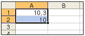
- 10.3
- 9.7
- 10
- 11
(정답률: 64%)
27. 아래의 시트에서 주민등록번호로 성별을 나타내고자 할 때 [B2] 셀에 맞는 수식은?
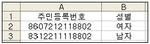
- =IF(LEFT(7,1)=“1”,“남자”,“여자”)
- =IF(MID(A2,7,1)=“2”,“남자”,“여자”)
- =IF(RIGHT(A2,5)=“1”,“남자”,“여자”)
- =IF(MID(A2,7,1)=“1”,“남자”,“여자”)
(정답률: 50%)
28. 사용자 정의 표시 형식에서 반복되는 문자열의 입력을 자동화하려면 3행에는 표시 형식을 어떻게 지정해야 하는가?
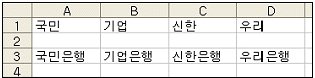
- @[은행]
- @은행
- @은행@
- 은행@
(정답률: 56%)
29. 다음 워크시트에서 [A8] 셀에 아래의 수식을 입력했을 때의 계산 결과로 옳은 것은?
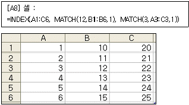
- 12
- 3
- 14
- 20
(정답률: 39%)
30. 스프레드시트 프로그래밍(VBA) 작성 시 올바른 방법이 아닌 것은?
- 주석은 홑 따옴표 기호(‘)에 의해 표시된다. 한 줄 전체를 모두 주석으로 사용할 수도 있고, 동일한 줄에서 명령의 뒤에 주석을 삽입할 수도 있다.
- 변수 이름은 대, 소문자로 구분하지 않고, 빈 칸이나 마침표를 사용할 수 있다.
- 매크로와 같은 프로시저는 Sub로 시작하고 End Sub로 끝난다.
- 사용자가 사용하는 모든 변수를 선언하도록 하면 Option Explicit를 첫 줄에 삽입하면 된다.
(정답률: 46%)
31. 다음 VBA 구문에 대한 설명 중 가장 올바른 것은?
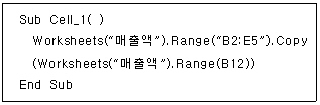
- [매출액] 시트의 [B2:E5]의 범위를 복사한다.
- [매출액] 시트의 [B12] 셀을 복사하여 [B2:E5]의 범위에 붙여넣기 한다.
- [매출액] 시트의 [B2:E5]의 범위를 복사하여 [B12] 셀에 붙여넣기 한다.
- [매출액] 시트의 [B2:E5]의 범위와 [B12] 셀의 내용을 병합한다.
(정답률: 61%)
32. 다음 중 [데이터]-[레코드 관리] 메뉴를 이용한 레코드의 검색에 관한 내용으로 옳지 않은 것은?
- 레코드의 찾기 조건에는 와일드카드(*)를 사용할 수 있다.
- 찾기 조건은 문자 단위로 지정하더라도 검색 결과는 레코드 단위로 표시된다.
- 찾기 조건을 지정하지 않고 검색을 실행하면 현재 이하(이전)의 전체 레코드가 검색된다.
- 조건에 맞는 레코드를 표시하는 동안 [다음 찾기]를 계속 누르면, 레코드 찾기가 반복된다.
(정답률: 32%)
33. 아래의 워크시트에서 전체 데이터[A1:E5]를 이용하여 대리점별, 분기별 매출액을 비교하기 위해 차트를 작성하려고 할 때 다음 중 가장 적합하지 않은 것은?
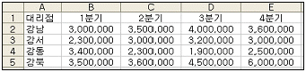
- 영역형
- 원형
- 도넛형
- 막대형
(정답률: 46%)
34. 다음 워크시트에 대해서 [A6] 셀과 [A7] 셀에 아래와 같이 입력하였다. [A6]과 [A7]의 결과 값을 순서대로 바르게 나타낸 것은?
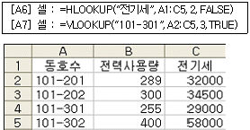
- 32000, 29000
- 255, 29000
- 29000, 255
- 29000, 32000
(정답률: 53%)
35. [도구 모음]-[양식] 메뉴의 콤보상자에 컨트롤 서식을 아래와 같이 설정하고 매크로를 지정하였다. 다음 중 네모 칸 ⓐ에 들어갈 내용으로 알맞은 것은?
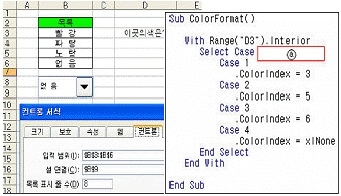
- Range(“B2”).Value
- Range(“B3”).Value
- Range(“B6”).Value
- Range(“B9”).Value
(정답률: 31%)
36. 아래의 <데이터>에서 고급필터의 조건을 입력했을 때 실행 결과로 옳은 것은?
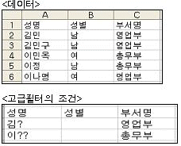
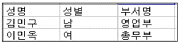
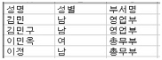
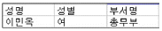
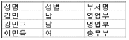
(정답률: 42%)
37. 다음 중 [파일]-[인쇄 미리 보기]-[설정]의 [페이지 설정] 대화상자의 [시트] 탭에서 선택할 수 있는 항목은?
- 페이지 순서
- 인쇄 영역
- 반복할 행
- 반복할 열
(정답률: 34%)
38. 매크로 기록의 특징에 관한 설명 중 옳지 않은 것은?
- 반복 작업과 빈번하게 행하는 일련의 조작을 자동적으로 실행할 수 있다.
- 자주 사용하는 수식을 사용자 지정 함수로 정의해 둘 수 있다.
- 엑셀 작업 중에 언제라도 매크로를 실행 할 수 있다.
- 기록한 매크로는 나중에 다시 편집할 수 없으므로 기능과 조작을 추가 또는 삭제 할 수 없다.
(정답률: 73%)
39. 다음의 [새 웹 쿼리] 대화상자에 대한 설명이 잘못된 것은?
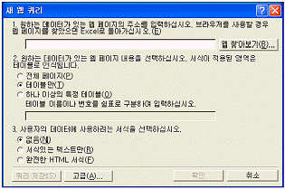
- 1번은 쿼리를 통해 가져오고자 하는 데이터가 들어있는 웹 페이지의 주소를 입력하는 곳이다.
- 2번에서 ‘테이블만’을 선택하면 표 형태로 작성되어 있는 데이터만 가져온다.
- 3번에서 ‘서식있는 텍스트만’을 선택하면 하이퍼링크나 셀병합 등 웹 페이지에 설정되어 있는 서식을 가져온다.
- ‘쿼리 저장’에 의해 *.iqy 파일로 저장하여 다른 문서에서 같은 데이터를 가져오거나, 다른 사용자와 해당 데이터를 공유할 수 있다.
(정답률: 50%)
40. 다음 워크시트에서 [A]열의 사원코드 중 첫 문자가 ‘A’이면 50,000원, ‘B’이면 40,000원, ‘C’이면 30,000원의 기말수당을 지급하고자 할 때 수식으로 옳은 것은?
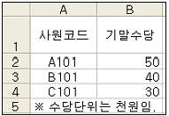
- =IF(LEFT(A2,1)=“A”,50, IF(LEFT(A2,1)=“B”,40,30))
- =IF(RIGHT(A2,1)=“A”,50, IF(RIGHT(A2,1)=“B”,40,30))
- =IF(LEFT(A2,1)=A,50, IF(LEFT(A2,1)=B,40,30))
- =IF(RIGHT(A2,1)=A,50, IF(RIGHT(A2,1)=B,40,30))
(정답률: 65%)
3과목: 데이터베이스 일반
41. 다음 중 데이터베이스 정규화에 대한 설명으로 가장 옳지 않은 것은?
- 릴레이션이 데이터를 조작할 때 발생할 수 있는 이상현상(Anomaly)을 방지한다.
- 성능 향상을 위해서는 가능한 높은 수준의 정규형을 유지해야 한다.
- 상위 정규형은 하위의 정규형을 포함하므로 하위 정규형이 이루어진 뒤에 상위 정규형을 적용할 수 있다.
- 데이터의 종속으로 인하여 발생하는 현상을 이상 현상(Anomaly)이라 하고, 삭제, 갱신 그리고 삽입 이상이 있다.
(정답률: 35%)
42. 다음 중 폼의 영역(Section)에 대한 설명으로 가장 옳지 않은 것은?
- 본문, 폼 머리글/바닥글, 페이지 머리글/바닥글로 구분된다.
- 다섯 개의 영역을 모두 구성할 필요는 없다.
- 페이지 머리글/바닥글 영역은 인쇄를 고려한 영역이다.
- 단일폼의 경우 ‘본문’ 영역은 반복적으로 표시된다.
(정답률: 53%)
43. 다음 중 액세스를 이용하여 테이블을 작성할 때 고려하지 않아도 될 사항은?
- 필드 크기
- 필드 이름
- 필드의 데이터 형식
- 레코드 수
(정답률: 39%)
44. 다음 중 사원(사번, 성명, 근무점수, 부서명) 테이블에서 부서명이 ‘영업부’인 사원들의 근무점수를 15%씩 올리는 SQL문으로 옳은 것은?
- UPDATE 근무점수 = 근무점수 * 1.15 FROM 사원 HAVING 부서명 = ‘영업부’ ;
- UPDATE 사원 VALUE 근무점수 = 근무점수 * 1.15 WHERE 부서명 = ‘영업부’ ;
- UPDATE 근무점수 = 근무점수 * 1.15 FROM 사원 WHERE 부서명 = ‘영업부’ ;
- UPDATE 사원 SET 근무점수 = 근무점수 * 1.15 WHERE 부서명 = ‘영업부’ ;
(정답률: 43%)
45. 다음 중 관계형 데이터베이스의 테이블에 대한 설명으로 가장 옳지 않은 것은?
- 테이블에는 동일한 속성(필드)이 두 개 이상 존재할 수 없다.
- 속성들 간의 순서를 유지하는 것이 중요하다.
- 동일한 레코드를 중복하여 입력해서는 안 된다.
- 레코드들 간의 순서는 의미가 없다.
(정답률: 40%)
46. 다음 중 Connection 개체와 가장 관련이 없는 것은?
- Open : 데이터 원본에 대한 연결을 설정한다.
- Execute : 지정된 쿼리, SQL 구문 등을 실행한다.
- AddNew : 새 레코드를 만든다.
- ConnectionString : 데이터 원본을 연결할 때 사용하는 정보를 나타내는 문자열이다.
(정답률: 35%)
47. 다음 보기는 급여가 2,100,000원이 넘는 모든 직원을 선택하는 SQL문이다. 이때 WHERE절에 나열된 조건에 맞는 레코드를 선택하게 되는데 다음 중 WHERE절 구문에 대한 예제와 설명이 잘못 표현된 것은?
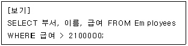
- WHERE 부서 = ‘영업부’ : 부서가 ‘영업부’인 모든 직원을 선택
- WHERE 나이 Between 28 in 40 : 나이가 28세에 40세 사이의 모든 직원 선택
- WHERE 생일 = #5/10/1996# : 생일날짜가 1996년 5월 10일인 직원 선택
- WHERE 입사년도 = 2001 : 입사년도가 2001년인 모든 직원 선택
(정답률: 39%)
48. 다음은 테이블의 각 레코드를 고유하게 식별하는 값을 갖는 기본 키(PK)에 대한 설명이다. 다음 중 옳지 않은 것은?
- 기본 키는 Null 값을 가질 수 없다. 따라서 반드시 값이 입력되어야 한다.
- 기본 키로 사용된 필드의 값은 변경할 수 없다.
- 항상 고유한 인덱스를 가져야 한다. 따라서 해당 필드에 동일한 값이 두 번 이상 입력될 수 없다.
- 두 개의 이상의 필드를 기본 키로 사용할 수 있다.
(정답률: 45%)
49. 다음 중 폼에서 데이터를 입력받는 컨트롤의 순서를 정할 때 사용하는 속성은?
- 정렬 순서
- 필터
- 데이터 입력
- 탭 순서
(정답률: 45%)
50. 다음 중 정렬 및 그룹화를 사용하여 업체별 판매금액의 총합을 요약보고서 형태로 작성하려고 하는 경우에 수행하는 작업으로 가장 옳지 않은 것은?
- 업체명이나 업체번호필드를 이용하여 그룹화를 수행한다.
- 그룹의 머리글에 =sum([판매금액])을 삽입한다.
- 본문 영역에 아무런 컨트롤도 추가하지 않는다.
- 전체 업체의 총 판매금액에 대한 사항은 페이지 바닥글에서 구성한다.
(정답률: 33%)
51. 다음 중 거래명세서, 세금계산서 등과 같은 방식으로 데이터를 출력하기 위한 보고서로 적합한 것은?
- 차트 보고서
- 크로스 탭 보고서
- 주소 레이블 보고서
- 업무 양식 보고서
(정답률: 60%)
52. 다음 중 보고서 인쇄를 위한 [페이지 설정] 대화 상자에서 설정할 수 있는 기능으로 가장 거리가 먼 것은?
- 출력될 용지의 위, 아래, 좌, 우 여백의 지정
- 출력될 용지 방향(가로 방향, 세로 방향)
- 열의 개수(한 줄에 표시할 레코드 개수)
- 확대/축소(데이터가 많은 경우 컨트롤 확장)
(정답률: 29%)
53. 다음 중 컨트롤에 대한 설명으로 가장 옳지 않은 것은?
- 속성창을 이용하여 컨트롤에 설정된 속성을 확인하거나 속성 값을 변경하며, 한번에 여러 컨트롤의 속성을 변경할 수 있다.
- 계산 컨트롤의 컨트롤 원본은 ‘=’로 시작되는 계산식을 지정한다.
- 테이블의 내용을 보여주고 수정하는 바운드 컨트롤의 컨트롤 원본에는 필드명을 지정한다.
- ‘컨트롤 원본’이 설정되지 않은 언바운드 컨트롤에는 데이터를 입력하거나 수정할 수 없다.
(정답률: 52%)
54. 다음 중 인덱스에 대한 설명으로 가장 옳지 않은 것은?
- 데이터의 검색속도를 빠르게 하기 위해 사용한다.
- 일련번호나 메모, 날짜/시간 데이터 형식의 필드에는 인덱스를 지정할 수 없다.
- 인덱스를 설정하면 데이터를 추가, 삭제할 때 성능이 떨어질 수도 있다.
- 단일 필드 기본 키는 인덱스 속성이 “예(중복불가능)”으로 지정되어야 한다.
(정답률: 41%)
55. 어느 테이블에서 특정 필드의 속성이 다음과 같은 경우에 해당하는 설명으로 가장 옳지 않은 것은?
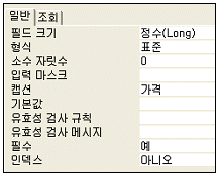
- ‘데이터시트 보기’ 상태에서 필드 값으로 23.7을 입력하면 23으로 기록된다.
- ‘데이터시트 보기’ 상태에서 필드 값으로 12345를 입력하면 12,345로 표시된다.
- 필드 값은 반드시 입력해야 한다.
- ‘데이터시트 보기’ 상태에서 필드의 제목은 ‘가격’으로 표시된다.
(정답률: 43%)
56. 보고서의 속성에 대한 설명으로 가장 옳지 않은 것은?
- 보고서의 레코드 원본 속성에는 테이블이나 쿼리문(SELECT 질의문) 등을 지정해야 한다.
- 보고서의 레코드 원본으로 폼이 지정될 수 있다.
- 보고서에도 조건부 서식을 적용할 수 있다.
- 보고서의 배경색을 변경할 수 있다.
(정답률: 32%)
57. 다음의 사원 테이블을 대상으로 주소가 ‘경기도’로 시작하는 사원을 찾아, 급여를 기준으로 오름차순으로 정렬하기 위한 질의문으로 가장 적절한 것은?
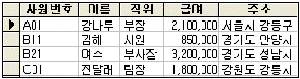
- select * from 사원 where 주소 like ‘경기도’ order by 급여 desc;
- select * from 사원 where 주소 like ‘경기도*’ order by 급여 asc;
- select * from 사원 where 주소 <> ‘경기도’ order by 급여 asc;
- select * from 사원 where 주소 = ‘경기도*’ order by 급여 desc;
(정답률: 65%)
58. 다음 보기 프로그램이 수행되었을 때 Sum의 값으로 옳은 것은?
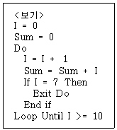
- 28
- 45
- 55
- 70
(정답률: 42%)
59. 다음 화면에서 설정되어 있는 폼의 속성 값으로 옳지 않은 것은?
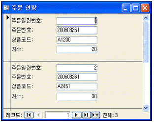
- 레코드선택기 - 예
- 탐색단추 - 예
- 기본보기 - 단일폼
- 캡션 - 주문현황
(정답률: 57%)
60. 학번, 이름, 학과, 학년, 주소 필드로 구성되는 <학생> 테이블에서 학과가 ‘경영정보’인 학생의 학번, 이름, 학년을 검색하되 학년이 낮은 학생부터 검색하는 SQL 질의문으로 옳은 것은?
- SELECT 학번, 이름, 학년 FROM 학생 ORDER BY 학년 ASC WHERE 학과 = ‘경영정보’;
- SELECT 학번, 이름, 학년 FROM 학생 WHERE 학과 = ‘경영정보’ ORDER BY 학년 ASC;
- SELECT 학번, 이름, 학년 FROM 학생 ORDER BY 학년 DESC WHERE 학과 = ‘경영정보’;
- SELECT 학번, 이름, 학년 FROM 학생 WHERE 학과 = ‘경영정보’ ORDER BY 학년 DESC;
(정답률: 48%)